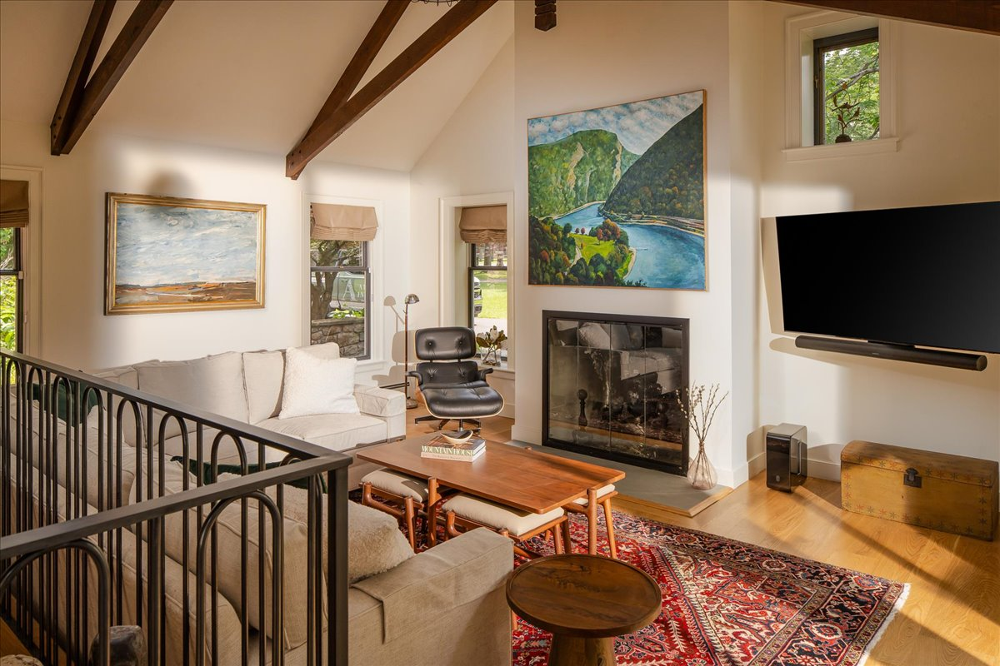
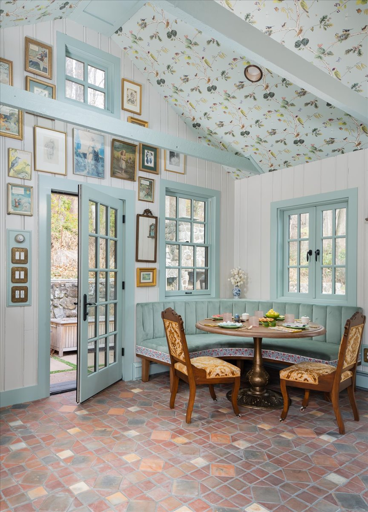

To make original architecture feel current, preserve the details with the most character, restore the materials that show age well, and add modern function in ways that do not compete with the house. The best historic home renovations keep the soul of the architecture while making everyday life easier, brighter, and more comfortable.
Start by deciding what deserves to lead.
Not every old detail needs the same level of attention. Before selecting finishes, identify the elements with the most character and make them the visual hierarchy. A fieldstone fireplace, wide-plank floor, vaulted ceiling, original millwork, or hand-laid tile can become the anchor for the room.
Once that hierarchy is clear, the surrounding decisions get easier. Paint, lighting, hardware, furnishings, and window treatments should support the architectural lead rather than competing with it. The result feels current because the room has focus.

Restore texture before adding more pattern.
A house with age often already has beautiful texture: grain, stone, plaster, brick, old metal, or hand-shaped edges. Refinishing those surfaces can do more than adding a new decorative idea. Cleaned stone, repaired floors, fresh plaster, and properly finished wood instantly make original architecture feel cared for instead of tired.
Pattern still has a place, especially in rooms that can carry a little confidence. The key is choosing moments that feel connected to the house. A patterned ceiling, tailored drapery, or upholstery can make an older shell feel lively without flattening its history.
Use color to connect old and new.
Paint is one of the most useful tools in a renovation because it can either quiet a busy condition or make an architectural detail feel freshly intentional. A repeated trim color, a softened ceiling tone, or a deeper shade on a built-in can connect old framing with new cabinetry, doors, and furniture.
Current does not have to mean stark. Muted blues, warm reds, muddied greens, deep browns, and softened neutrals can all feel modern when they are used with restraint and paired with crisp details.

Modernize the function, not the soul.
A home can keep its original character while gaining the things that make daily life easier: better lighting controls, improved circulation, concealed storage, durable performance fabrics, updated appliances, comfortable seating, and baths or kitchens that work hard without shouting.
These practical upgrades are often what make an old house feel current. When the functional pieces are designed quietly, the original architecture still reads first.
Bring in furniture with clean lines and real warmth.
Furnishings are where a historic room can start to breathe. Too many period pieces can make the room feel frozen, while overly sharp modern furniture can feel disconnected. A balanced mix works best: clean upholstery, antique or vintage wood, sculptural lighting, collected art, and a few tailored pieces that respect the scale of the room.
The goal is not to hide the age of the house. The goal is to make the room feel as though its best original features are still useful, beautiful, and ready for the next chapter.
Common Questions
How do you modernize an old house without losing character?
Preserve the strongest original features first, then update the systems and daily function around them. Better lighting, thoughtful storage, durable furnishings, and a restrained material palette can make an old house feel current without stripping away the details that give it value.
What original architectural details are worth preserving?
Beams, stone fireplaces, wide-plank floors, original trim, stair rails, tile, plaster, built-ins, and unusual room proportions are often worth preserving when they add craftsmanship or a clear sense of place. The right renovation edits around those features rather than treating them as obstacles.
What makes original architecture feel dated?
Original architecture usually feels dated when later updates fight the house: harsh lighting, mismatched finishes, awkward cabinetry, heavy window treatments, or furniture that ignores the room’s scale. Editing those layers often reveals that the architecture itself was never the problem.